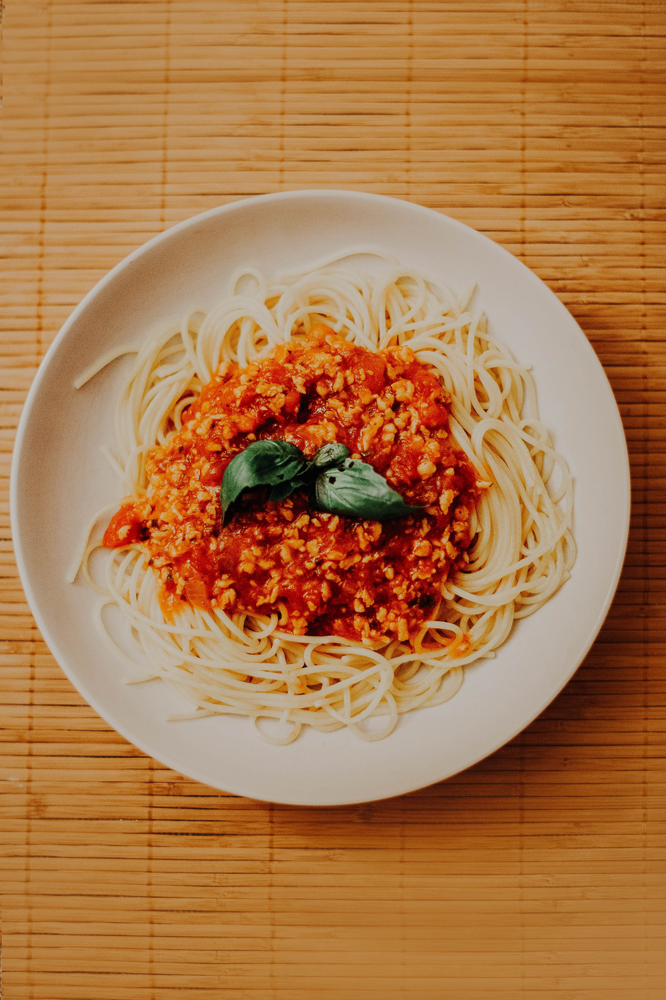

Savoury Vegan Bolognese

Photo by Joice Kelly on Unsplash
Description
A classic and savoury vegan bolognese.
Ingredients
- 2 tablespoons of cooking oil
- 1 red onion
- 2 cloves of garlic
- 200 g vegan mince of your choice
- 1 carrot
- 1 thick slice of cellery root
- 5 brown mushrooms
- 1 tablespoon of tomato paste
- 100 ml of red wine
- 1 can of chopped tomatoes
- fresh basil, oregano, thyme and rosemary to taste
- salt and pepper to taste
Steps
- Peel and chop the onions and garlic cloves in small pieces.
- Heat up the oil in a pan. Add the onions and garlic. Braise lightly until transparent.
- Add vegan mince and sauté for 2 minutes.
- Chop carrot, cellery and mushrooms in fine pieces. Add them to the pan and sauté everything for another 3 minutes.
- Add tomato paste and red wine. Stir well to avoid clumps of tomato paste.
- Add chopped tomatoes and let it all simmer for 15 minutes.
- In the meantime, cook your favourite pasta.
- Chop herbs finely and add them to the bolognese as you please.
- Finally, add salt and pepper to taste.
Now it's time to arrange your pasta and savoury bolognese on a plate. If you like, feel free to add grated vegan cheese. Enjoy!